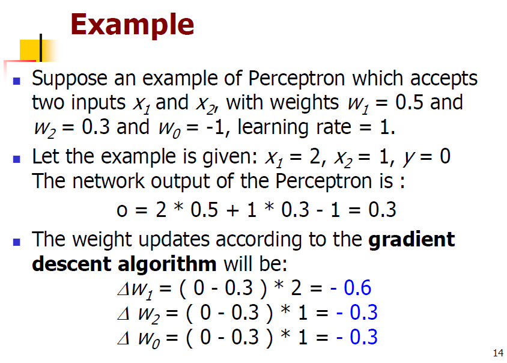
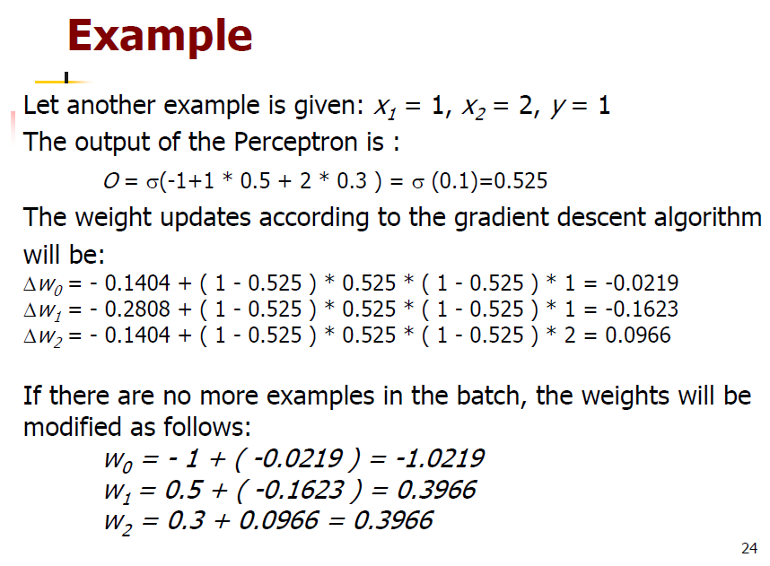
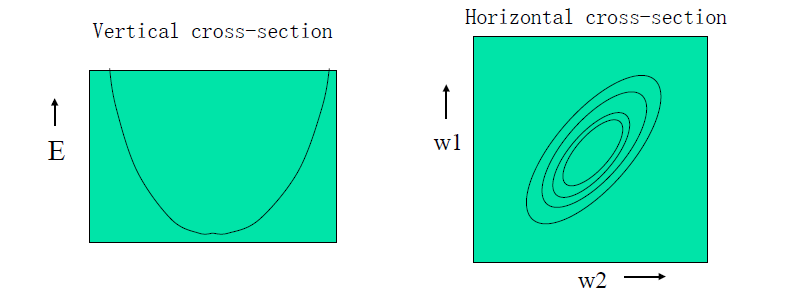

Gradient Descent Rule
VERY IMPORTANT
The Gradient Descent Rule
Perceptron rule fails if data is not linear separable
Use gradient descent to search the hypothesis space
- Perceptron rule cannot be used (not differentiable, it changes suddenly from 0 to 1, not continueous, differentiable can find value, maybe maximum or minimum)
- Hence, an unthreshold linear unit (based on error) is an appropriate error measure:
Ye: t, Oe: e
1/2 balance the square
e for differentiable
Understand
- all possible weight vectors (depend on myself)
- associated E values
The objective is to minimze the following errror
##
The Training is a process of minimizing the error E(w) in the steepest direction (most rapid decrease), this is in direction opposite to the gradient:
It leads to the gradient descent training rule:
first wi is the new one
secodn wi is the old one
Error Surface
convex, error must be parabolic with a single global minimum
- global minimum: find a direction can try to reach a specific level which is global minimum value, if I reach this level, I reach the global minimum.
- But maybe just find a local minimum, so its important to choose direction.
Moving downfill
Try to decrease the error value
partial derivative to 0, move opposite to current value.
Illustration of Gradiet Descent
Explain GDR
y: target, which is a constant, not relative to w
o: weighted sum of input, relative to w
x: constant
so rewrite o in term of w,x
o is equal to corresponding WiXie
convert partial derivative to the weighted sum of input
-Xie corresponding input
just to memorize the equation
Final GD rule
new weight(Wi left), learning rate(n|), old weight(Wi right), error(Oe),network output(Xie)

Perceptron: accurate, but linear
GDR: not accurate, guArantee minimum(performance maybe worse)
GD Learning Algorithm
also called batch learning
Initialization
Examples {(Xe,Ye)}N,E=1， initial weights Wi set to small random values, learning rate parameter η
Repeat
w is changed for each time
Using perceptron network not its rule
only if all the examples have been used, jump the for loop
update the ∆w when repeat all examples
∆Wi is the accumulated wastage
Repeat until termination condition is satisfied
GD Learning Example

Incremental gradient descent
The gradient descent rule faces two difficulties in practice:
- It converges very slowly
- If there are multiple local minima in the error surface, then there is no guarantee that it will find the global minimum
- That is why, a stochastic version called incremental gradient descent rule is developed to overcome these difficulties.
Incremental gradient is implemented
no sum Σ in IGD rule
no ∆ in final equation
faster than GD rule, because dont need wait for all data
Incremental Gradient Descent Learning Algorithm
Initialization
Example {(Xe,Ye)}N,e = 1, initial weights Wi set to small random values, learning rate parameter η
Repeat
It is similar to GD Learning algorithm
Sigmoidal Perceptrons
can differentiate, more reasonable
slightly change does not change the value suddenly
Training Sigmoidal Perceptrons
dont need cover too much, still using GD rule, now has sigmoidal function
only plus a σ’(s)
- Final equation
GD Learing Algorithm for Sigmoidal Perceptrons
Initialization
Repeat
Example


IGD Learing Algorithm for Sigmoidal Perceptrons
Initialization
Repeat
Perceptron Rule vs. GD rule
GD try to find sum squared error (target - net) value rather than (target - output) value
Perceptron will find the decision boundary which minimizes the classification error
(accurate, if the proble is linearly seperable)Gradient descent decision boundary may leave more instances misclassified as compared to the perceptron rule: could have a higher misclassification rate than with perceptron rule.
Perceptron rule (target - thresholded output) guaranteed to converge to a separating hyperplane if the problem is linearly separable
The error surface
The lines surfaces lies in a space with a horizontal axis for each weight and one vertical exis for the error
- For a linear neuron, it is a quadratic bowl
- Vertical cross-sections are parabolas
- Horizontal cross-sections are ellipses

Batch vs. incremental learning
Batch Learning
Batch Learning does steepest descent on the error surface
Incremental Learning
Incremental Learning zigzags around the direction of steepest descent
Summary
Perceptron training
- Uses threshold unit
- Converges after a finite number of iterations
- Output hypothesis classifies training datat perfectly
- Linear separability neccessary
Gradient Descent
- Uses unthresholded linear unit
- Converges asymptotically toward a minimum error hypothesis
- Termination is not guaranteed
- Linear separability not neccessary
The fall of the Perceptron
- Limitation is too strong: Unless input categories were Linear Separable, a perceptron could not learn to discriminate between them
- Unfortunately, ite appeared that many important categories were not linearly separable.